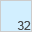
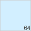

Shortcuts for Google™ - Options
Select Services
Available services
Your chosen services
General Settings and Behaviour
Appearance
 
Manage settings
Settings are saved automatically and are synced via chrome sync if chrome sync for extensions is enabled.